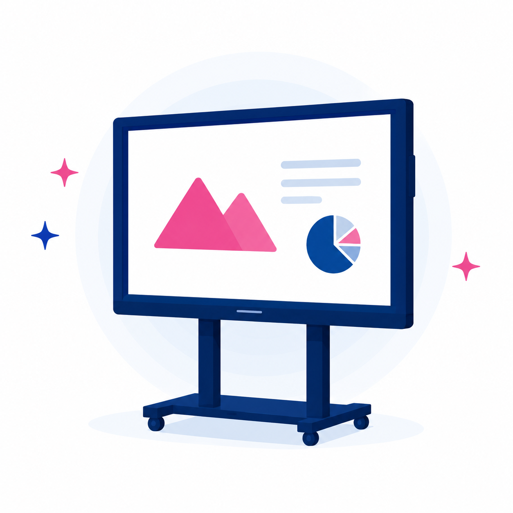

ベンキュー ジャパン株式会社
国際教育現場でも支持“インターナショナルスクールで選ばれる、
授業活用重視のブランド”
国内インターナショナルスクールシェアNo.1の実績を持つブランドです。教材提示、板書、グループワーク、発表など、授業内で電子黒板を積極的に使いたい学校や塾に向いています。画面の見やすさだけでなく、教室内のコミュニケーションを広げる機能も検討しやすく、英語教育や探究学習、ICT活用型の授業づくりを進めたい現場にも提案しやすい製品です。
- おすすめサイズの目安
- 65型小規模教室・少人数授業に
- 75型標準的な教室にバランス◎
- 86型中〜大教室におすすめ
標準搭載機能
12/12主要機能をしっかり確認。用途に合う1台を比較できます。教育現場で必要な機能をしっかり網羅！BenQ Board
主要項目を一目で比較OS・メモリ・ストレージ・CPUなど、BenQ Boardの主要仕様を整理しました。
OSAndroid 15メモリ16GBストレージ256GBCPUCortex-A78 × 2 ＋ A55 × 6画面サイズ65 / 75 / 86 インチNPU搭載搭載
スペックは比較の出発点ですBenQ Boardの利用環境や用途に応じて、最適なモデルを選びましょう。仕様一覧を相談する›
導入後の活用
運用支援初期設定から操作研修、授業での活用相談までまとめて確認できます。初期設定使い始めを整理操作研修先生方向けの案内活用相談授業用途に合わせるトラブル対応導入後の不安を軽減教材活用資料表示・書き込み定着支援運用までサポート
ギャラリー


BenQ Boardは導入規模・使いやすさ・サイズラインアップを見ながら比較できます。
用途・ご予算に合わせて相談する›